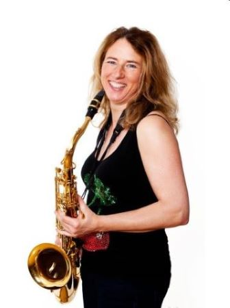
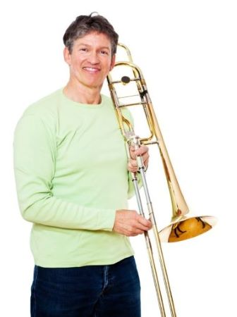

Over ons
Voor een musicus zoals Jesse is het lastig om dat volledig professioneel te doen.Zijn ervaring op de muziekschool bracht hem op het idee een eigen school te beginnen. Jesse zag dat Hannah lesgeven ook geweldig goed kon, dus vroeg hij haar om mee te doen. Ze vonden een mooi pand en ze startten met veel enthousiasme de muziekschool. En daar heeft hij nooit spijt van gekregen! Bij Jesse en Hannah is het leuk én leerzaam!
docente Muziek
Hannah is een vrolijke, goedlachse vrouw van 39 jaar. Ze is de
vriendin van Jesse. Hannah is al van jongs af aan geïnteresseerd
in veel verschillende muziekstijlen. Haar ouders hebben het met
de paplepel ingegoten. Langzamerhand werd de trompet echter
haar favoriete instrument. Ze speelde op school en had al jong
optredens in buurthuizen, op braderieën, enzovoorts.
Hannah volgde zelf vanaf haar zesde jaar les op de muziekschool.
Vanwege haar talent kreeg zij later privéles. Op de middelbare
school besteedde ze veel aandacht aan haar studie en de muziek
schoot er een beetje bij in. Maar toen ze haar diploma had
behaald, was het conservatorium een logische keus. Ook op het
conservatorium viel haar talent op. Ze werd gevraagd voor het
studentenorkest en speelde in haar vrije in een jazzband. Daar
ontmoette zij Jesse. Gedurende haar studietijd kwamen
medestudenten regelmatig naar haar toe met het verzoek om
hulp. Dat waren niet alleen trompetstudenten, maar ook studenten
die andere blaasinstrumenten bespeelden. Hannah merkte dat
bijles geven haar heel goed afging en dat ze het ontzettend leuk
vond.
Toen Jesse met het idee kwam om samen een muziekschool te
beginnen, hoefde Hannah niet lang na te denken. Het was dé manier om van haar hobby haar beroep te maken
en om muziek maken te combineren met lesgeven. Bij Hannah zijn jong en oud in goede handen!
docent Muziek
Jesse is een zeer muzikale man van 41 jaar. Hij is de vriend van
Hannah. In tegenstelling tot Hannah was hij als jonge jongen niet
erg geïnteresseerd in muziek en al helemaal niet in muziek maken.
Hij ging liever buiten spelen met zijn vriendjes of voetballen in het
park. Zijn ouders vonden het echter wel belangrijk dat hij
kennis nam van muziek en ze stuurden Jesse naar blokfluitles.
Daar leerde hij de beginselen en leerde hij noten lezen.
Op de middelbare school was al duidelijk hoe talentvol hij was.
Daarom ging hij naar het conservatorium, waar hij Hannah
ontmoette. Hij richtte zich op vele verschillende instrumenten en
werd opgeleid tot een allround musicus. Maar zijn liefde voor de
saxofoon en jazz bleef. Als bijbaantje gaf hij ook les op een
muziekschool en ook dat ging hem goed af.